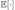
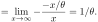
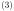
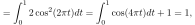
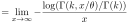
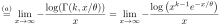

Next: August Radio waves in Up: Blog posts 2021 Previous: May Rayleigh fading audiolized Contents
Multiple-input and multiple-output MIMO antenna technology is used to exploit the multi-path propagation to improve the capacity of a communication link. In principle, the link's capacity can be increased merely by increasing the power of the transmitting antenna. However—apart from being energy-consuming—this also increases interference to any other receivers should they operate in the same frequency band. In MIMO, the energy is divided among multiple antennas, and the link capacity is improved without using any extra energy and without increasing interference towards other transmitters.
Why does it work? Here is how I came up with a simple argument based on stochastic geometry. First, let us make some assumptions. We assume a flat and infinite Earth (this is a “tin foil assumption,” but it is often reasonable). In addition, our communication channel environment consists of many obstacles so that our transmitting and receiving antennae can not see each other. We are in a city full of houses, cars, trees, etc. Then, our data signal propagates to the receiver through multiple paths, for example, through distinct streets around different houses. The aggregate signal in the receiver will be Rayleigh faded. The city is stormed with mobile phones exchanging data with their base stations, which further hand the data to the receiving mobile phones' base station and, on the other hand, cause interference to the other base stations. We assume that the interfering base stations are independently located and are distributed according to the Poisson point process.
Let's consider that person A is sending a message to person B. We are interested in the probability that the base station serving person A successfully transmits the message to a base station serving person B. Under the assumptions above and some other simplified assumptions, as derived in here, we can express the probability of a successful transmission as:
| Successful single-antenna transmission | (1) |
where  denotes the mean transmitting power of the base stations.
In MIMO, we use multiple distinct antennas to transmit the same message. In each antenna, the encoding of the message should be different so that it can't mix with the information that the other antennas are transmitting—this is possible by orthogonal modulation. Assuming that each message from each antenna independently propagates to the receiver, we can calculate from equation  by the complementary probability that at least one message transmission gets through:
| Successful MIMO transmission with N antennas | (2) |
where  is the number of transmitting antennas. Notice that we divided the transmitting power by the number of antennas, so we didn't increase the aggregate power. On the other hand, should we have no MIMO technology at hand, we could improve the link quality by increasing the power of a single antenna. In the following figure, we compare these two cases.
It is evident that MIMO is an excellent solution for increasing the throughput of a wireless communication link. Using multiple antennas, we can save power and achieve better data rates than by merely increasing the power of a single transmitter. In MIMO, using multiple antennas, statistically speaking, a significant fraction of the channels are in a good state (as well as a bad state), and the performance is consistent.
References: